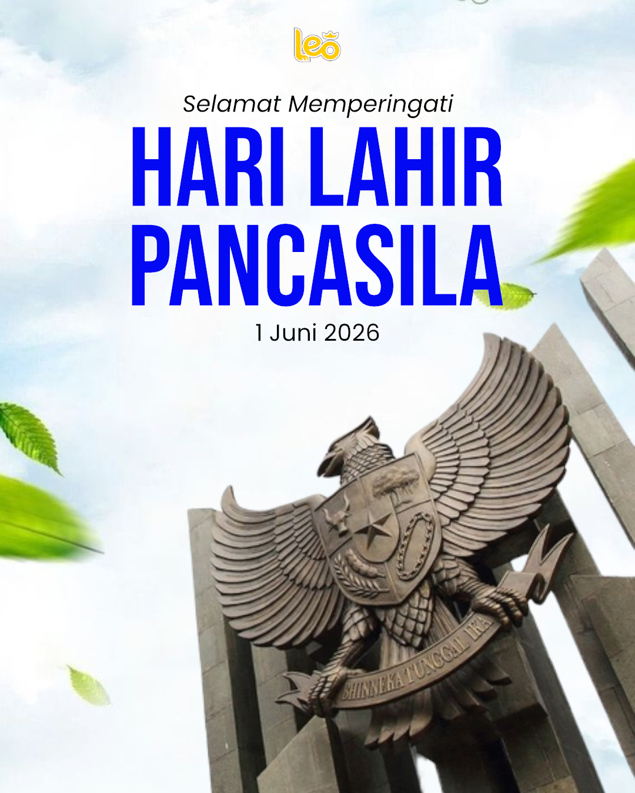

Kumpulan desain feed Instagram yang saya buat untuk menyampaikan informasi dan materi edukatif kepada audiens. Desain dirancang dengan memperhatikan aspek visual, keterbacaan, dan penyajian informasi agar pesan dapat tersampaikan secara jelas, menarik, dan mudah dipahami.
